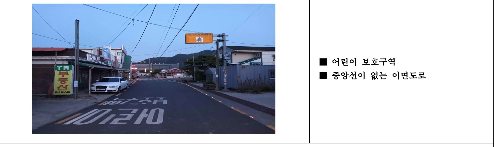

760. 在下列情况下，最安全的两种驾驶方法是？

- ①自儿童保护区域解除点前起，提前加速行驶。
- ②在没有中心线且不区分人行道和车道的道路，行驶时应尤为注意行人的安全。
- ③即使是解除儿童保护区域地区的人行横道，也要确认是否有行人并缓慢行驶。
- ④由于是日落时分，所以行驶时打开远光灯并持续鸣笛，以确认前方安全。
- ⑤道路右侧的黄色虚线表示允许长时间停车但不能临时停车，因此可以长时间停车。
查看答案
答案
② 在没有中心线且不区分人行道和车道的道路，行驶时应尤为注意行人的安全。
③ 即使是解除儿童保护区域地区的人行横道，也要确认是否有行人并缓慢行驶。
依据
即使儿童保护区解除，也应避免在后路高速行驶，在无信号的人行横道处缓慢行驶，同时检查行人安全。虽然是日落时分，但连续开远光灯行驶可能会对迎面驶来的车辆和行人造成眩光，黄色虚线表示允许临时停车但禁止停放。
依据文字为学习用机器翻译。